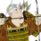
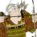

Requires
- Buildings:

- Arts:

Enables
- Buildings:

- Units:
 

Basic Building Statistics (can be modified by difficulty level, arts, skills, traits and retainers)
- Cost: 1440
Description
Mastery seems a distant target to the novice.
The koryu school adds to the experience of any naginata units trained there. It also allows the training of naginata monks and bow monks if there is a Buddhist temple in the same province. Warrior monks or "sohei" are often depicted in Japanese art as carrying the naginata: it was a weapon of noblemen (and all monks had a certain nobility of purpose because of their calling) and one that needed skill to use. After all, any fool can swing a staff or club. The weapon seems to have come into relatively common usage for samurai and sohei during the Gempei War itself. The association with warrior monks was not always accurate, but became a convention of artistic depictions of monks in battle. Japanese artists even drew the weapon being carried by monks who had probably never even seen a naginata, let alone held one. This, however, was to emphasize the martial tradition of monks, who were far from being quiet contemplative types like their Christian contemporaries.